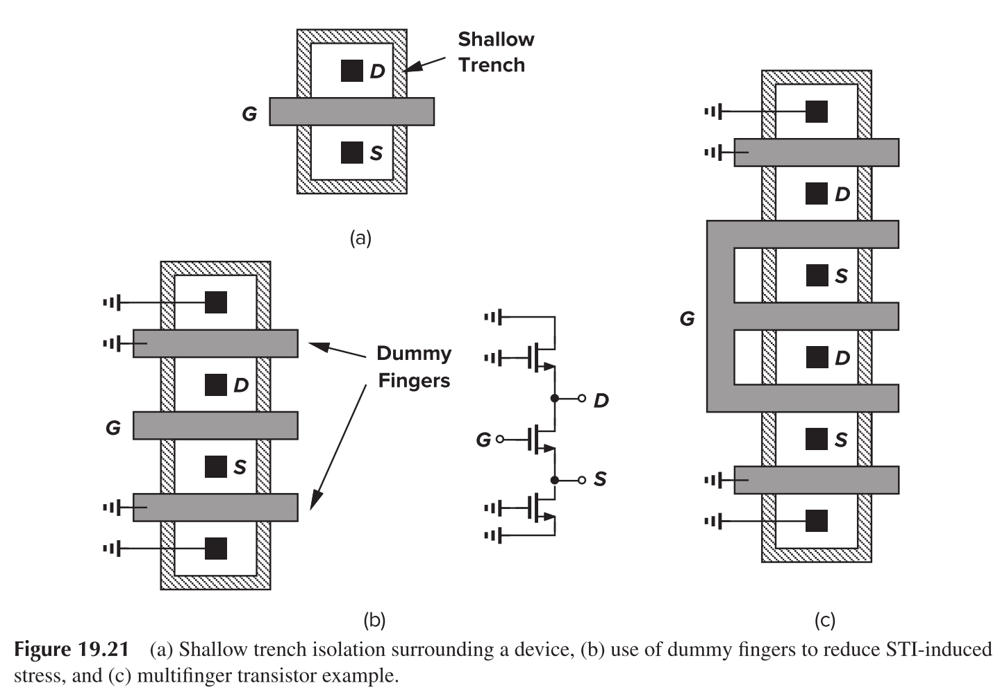

Basic Theory of MOSFETs
This article presents the formulas and theories regarding the basic MOSFETs.
I-V Characteristic
- Turn-off region ($V_{GS}<V_{TH}$)
Triode region/ Linear region ($V_{GS}>V_{TH}, V_{DS}<V_{GS}-V_{TH}$)
Saturation region/ Square law ($V_{GS}>V_{TH}, V_{DS}>V_{GS}-V_{TH}$)
Calculation of Gm
In saturation region
Second-Order Effects
Body Effect
and
Thus, body effect can be utilized to modify the threshold voltage.
Channel Length Modulation
and
Thus, long-channel MOSFET exhibits less channel modulation effect.
Subthreshold Conduction
Or called weak inversion region.
and
MOSFETS operating in subthreshold region have higher gain, but generally, MOSFETs are inferior to bipolar transistors in terms of gm.
Parasitic
Capacitance

Off region
Triode region
Gate-channel capacitance is evenly split between the source and the drain
Saturation region
Resistance
In saturation region
In triode region
MOSFET as Capacitor
The source, drain and the bulk are connected together as a terminal, while the gate is treated as another terminal.
- Negative potential on gate -> attract holes -> accumulation region -> high capacitance
- Rise potential on gate -> expel both holes and electrons -> depletion region/ weak inversion region -> low capacitance
- Gate potential exceed $V_{TH}$ -> attract electrons -> strong inversion region -> high capacitance
Short-Channel Device
Velocity Saturation (Lateral)
Previously, it is assumed that $v=\mu E$, but that is not true for short-channel devices, as shown in the figure
Consider a extreme case that the velocity is fixed to a maximal value, we have
The drain current is, therefore, irrelevant to the channel length and directly proportional to the overdrive voltage.
Another consequence is the early saturation of Id
Furthermore, $g_m$ would be less sensitive to $I_d$ or $V_{GS}$.
Mobility Degradation (Vertical)
The mobility of the charge carriers in the channel also declines as the gate-source voltage and the vertical field increase.
For this reason, we may expect $g_m=\mu C_{ox}(W/L)(V_{GS}-V_{TH})$ would not strictly follow the linear relationship.
Hot Carrier Effects
While the average velocity of carriers saturates at high fields, the instantaneous velocity and hence the kinetic energy of the carriers continue to increase, especially as they accelerate toward the drain. These are called “hot” carriers.
In the vicinity of the drain region, hot carriers may “hit” the silicon atoms at high speeds, thereby
creating impact ionization. As a result, new electrons and holes are generated, with the electrons absorbed by the drain and the holes by the substrate. Thus, a finite drain-substrate current appears. Also, if the carriers acquire a very high energy, they may be injected into the gate oxide and even flow out the gate terminal, introducing a gate current. The substrate and gate currents are often measured to study hot carrier effects.
Layout Considerations
Well Proximity Effect (WPE)
Due to the reflection of the dope implants, the border areas of the n-well receive a different doping density from those in the middle of the n-well.
This problem can be alleviated by drawing a large n-well beyond the devices.
Length of Diffusion (LOD)
Modern MOS devices are surrounded by a shallow “trench” so as to avoid the formation of a channel between adjacent transistors, called "Shallow Trench Isolation" (STI). STI material has different thermal coefficient to the surrounding silicon, generating stress and altering electrical properties.
To alleviate the problem, dummy fingers could be inserted on the sides of the main device to minimize the propagation of the stress.

Reference
- Behzad Razavi. Design of analog CMOS integrated circuits.
- Post link: https://triblemany.github.io/archives/6eefa2f5/mosfet.html
- Copyright Notice: All articles in this blog are licensed under BY-NC-SA unless stating additionally.